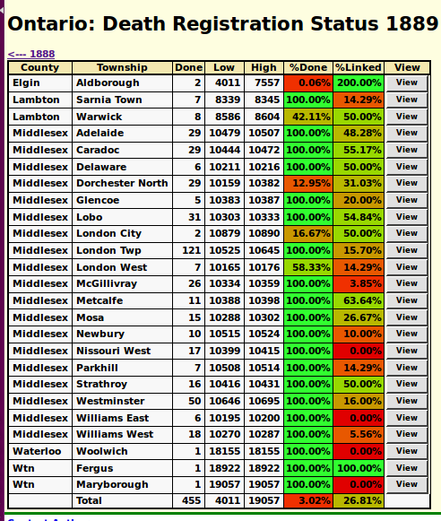

Death Registration Status by Year: Help
The associated panel displays an overview of the progress
of the transcription effort for Ontario death registrations
for a particular year.

For each registration city, town, or township,
this page displays:
- The county name.
- The name of the city, town, or township.
- the number of death
registrations that have been transcribed. To be considered as
transcribed at least the name of the deceased has
been transcribed.
- The lowest registration number for the town or township.
- The highest registration number for the town or township.
- The ratio of the number of registrations that have been
transcribed to the number of registrations between the lowest and
highest registration number, which gives a measure of what
proportion of the registrations have been transcribed, as a percentage.
- The percentage of those transcriptions that have been
linked to corresponding records in the family tree. These
cells are color-coded to visually indicate the degree of
completeness, from dark red for townships where there are no
links to the database through bright green for townships where
all of the deaths have been linked.
- Clicking on the View button
displays a
summary of the transcriptions for that
particular place of registration.
At the bottom a summary row is displayed. This displays:
- The total number of transcriptions for this year.
- The lowest registration number transcribed.
- The highest registration number transcribed.
- The ratio of the number of transcriptions to the total number of
transcriptions between the lowest and highest registration numbers,
which gives a measure of the proportion of registrations that have
been transcribed in that range, as a percentage.
- The percentage of transcribed registrations that have been linked
to the family tree.